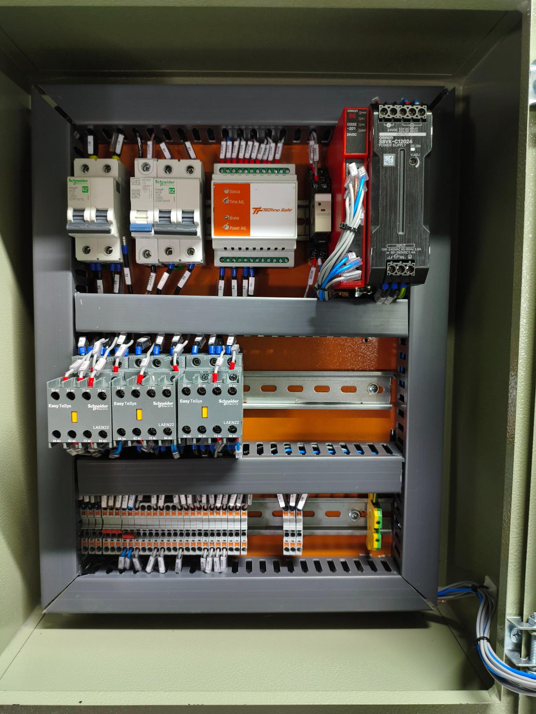

↳
Mapa de fios
PAINEL DE COMANDO
Conexões documentadas
42 tags · 125 etiquetas
↓
Exportar
Painel
Foto original
G9SE · I/O
Mapa interativo do painel elétrico
Disjuntores e módulos em cima, três contatores na região central e borneira embaixo. Escolha uma tag para destacar os fios e suas conexões.
Arraste para mover · role para ampliar
+
−
⤢
◎
U1
selecionado

Vista interna · foto original fornecida por você
OMRON · RELÉ DE SEGURANÇA
G9SE-201
Bornes e tags do seu painel
×
Tags nos 14 bornes confirmadas por você
Borne
Função
Tag
Ative o JavaScript para selecionar as tags e visualizar suas conexões.